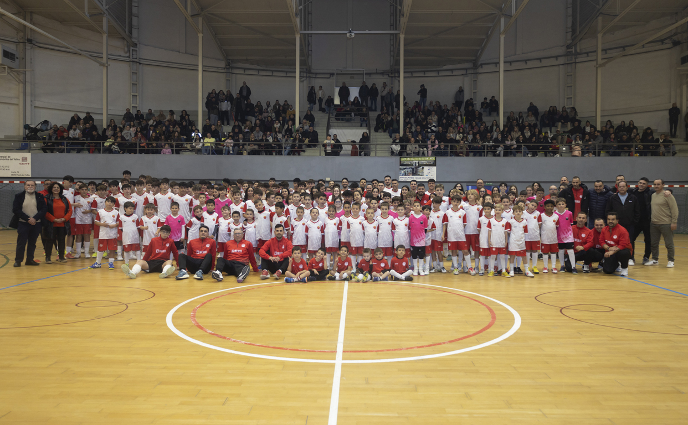
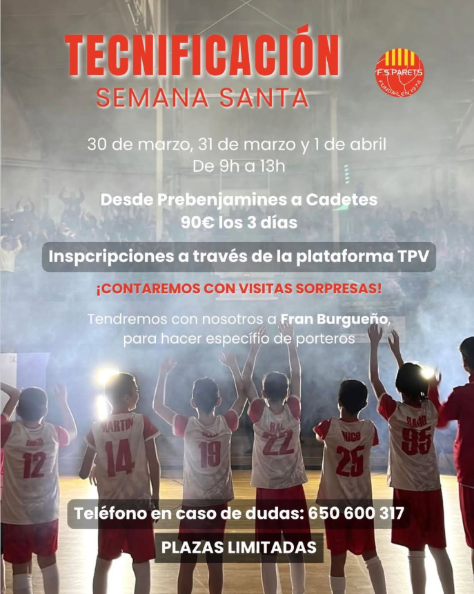
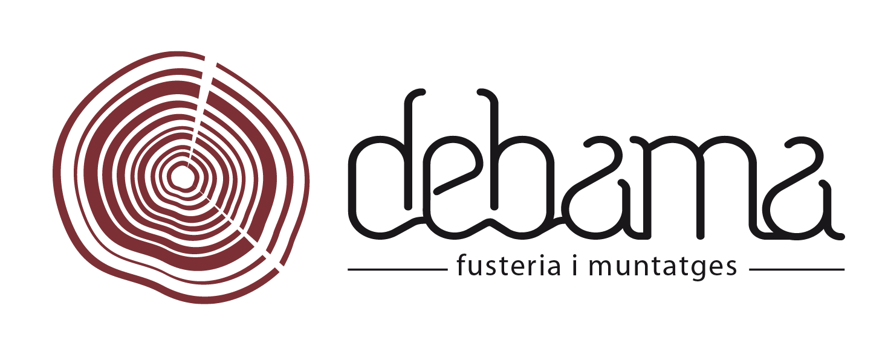
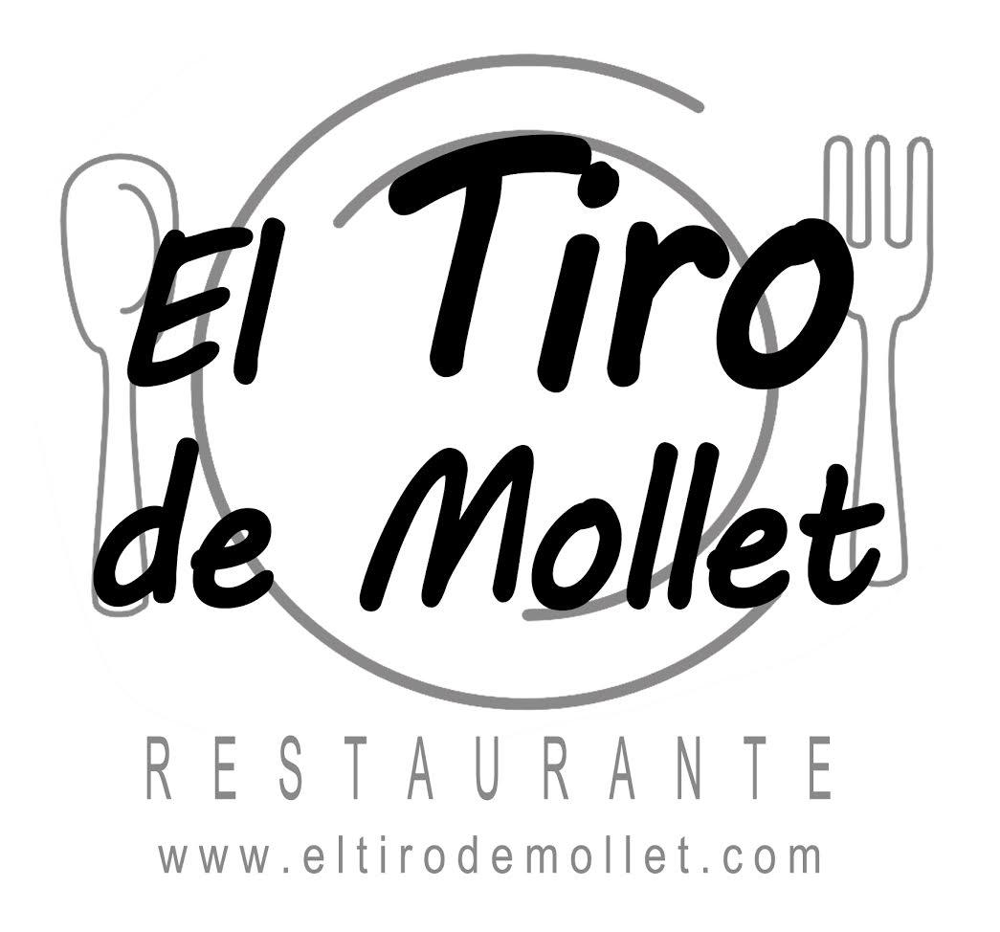
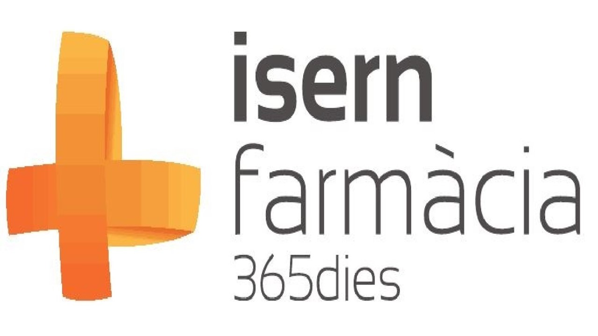
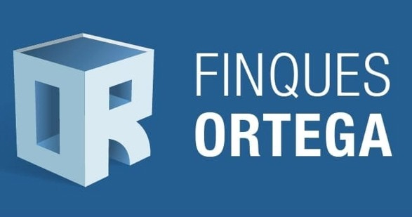
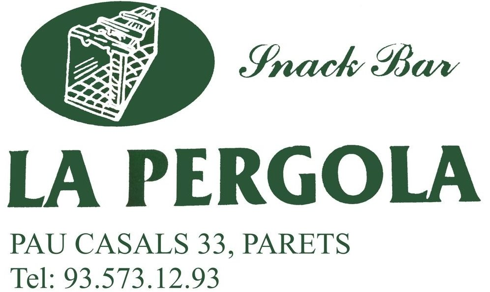
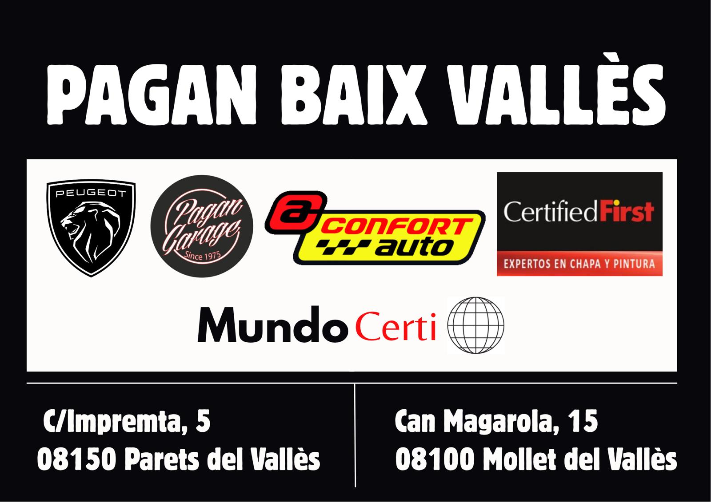

Primer equip masculí
Equip sènior que representa el club a les màximes competicions territorials, amb jugadors formats a la casa i reforços d'experiència.
El nostre és un club de família, on fomentem la pràctica de l’esport, l’aprenentatge i els valors que acompanyen el creixement dels nostres jugadors. A més d’impulsar la formació en Futbol Sala, volem que el club sigui molt més que una pista: organitzem activitats fora de l’entrenament perquè tothom s’hi senti com a casa. Comptem amb un equip humà de gran qualitat que treballa amb dedicació per tirar endavant un projecte que va començar fa uns anys i que, dia rere dia, continua creixent amb tots nosaltres.

El F.S. Parets és l'entitat de referència del futbol sala al municipi. Des de la seva fundació, el club ha apostat per un projecte esportiu sòlid, arrelat al poble i obert a tothom.
L'objectiu és créixer esportivament sense oblidar la formació humana dels jugadors i jugadores, promovent valors com el respecte, l'esforç, el treball en equip i la il·lusió.
Millora el teu nivell amb sessions específiques dirigides per entrenadors del club. Entrenament tècnic, tàctic i personalitzat.

Horaris i seus dels equips del F.S. Parets.
Descobreix els conjunts sènior del F.S. Parets.
Equip sènior que representa el club a les màximes competicions territorials, amb jugadors formats a la casa i reforços d'experiència.
El projecte femení del F.S. Parets, en creixement constant, amb jugadores compromeses amb l'escut i amb la promoció del futbol sala femení.
Des de l'escoleta fins al juvenil, formant el futur del club.
Primer contacte amb el futbol sala a través del joc i activitats lúdiques.
Nens i nenes que comencen a descobrir la competició d'una manera molt formativa.
Aprenentatge d'hàbits esportius i treball en equip amb pilota sempre protagonista.
Etapa clau per consolidar tècnica bàsica i la passió pel futbol sala.
Més càrrega tàctica i competicions regulars. Punt d’unió entre formació i rendiment.
Més càrrega tàctica i competicions regulars. Punt d’unió entre formació i rendiment.
Treball específic de posicions i sistemes de joc, mantenint la formació integral.
Treball específic de posicions i sistemes de joc, mantenint la formació integral.
Augment de la exigència competitiva i preparació per al pas al juvenil.
Augment de la exigència competitiva i preparació per al pas al juvenil.
Equip femení de categoria cadet, formant jugadores per al futur del club.
Pont cap als equips sèniors, amb un projecte clar de continuïtat al club.
Pont cap als equips sèniors, amb un projecte clar de continuïtat al club.
Pont cap als equips sèniors, amb un projecte clar de continuïtat al club.
Pont cap als equips sèniors, amb un projecte clar de continuïtat al club.
Empreses que donen suport al projecte esportiu i social del F.S. Parets.






Vols ser patrocinador del F.S. Parets? Contacta amb el club i t'informarem de totes les opcions de visibilitat al pavelló i a la web.
Actualitat del F.S. Parets: partits, activitats socials i futbol base.
El Primer Equip Masculí del F.S. Parets va aconseguir una treballada victòria per 4-5 a la pista del Futsal Pineda A en un partit molt intens i ple d’alternatives. L’equip va saber mantenir l’encert ofensiu en els moments clau per acabar enduent-se tres punts molt valuosos.
El Primer Equip Femení del F.S. Parets no va poder sumar en la seva visita a la pista del Lainco Esportiu Rubí FS B (7-1). L’equip local va imposar un ritme molt alt des de l’inici i va obrir distàncies al marcador. Tot i això, el Parets va continuar lluitant fins al final i va aconseguir el gol de l’honor.
La jugadora Martina, del Futbol Sala Parets, ha estat convocada al 1r entrenament de la Selecció Catalana en la categoria SUB 8 Femenina. Un gran reconeixement al seu esforç i una magnífica notícia per al club. Enhorabona!
El F.S. Parets posa en marxa una nova tecnificació dirigida a jugadors i jugadores que volen millorar el seu nivell tècnic i tàctic. Sessions específiques amb entrenadors del club per potenciar habilitats individuals. Places limitades!
Vols jugar al F.S. Parets, col·laborar com a espònsor o fer-nos arribar qualsevol consulta? Posa't en contacte directament amb el club.
Poliesportiu municipal Joaquim Rodríguez Oliver
Passeig Fluvial, s/n
08150 Parets del Vallès (Barcelona)